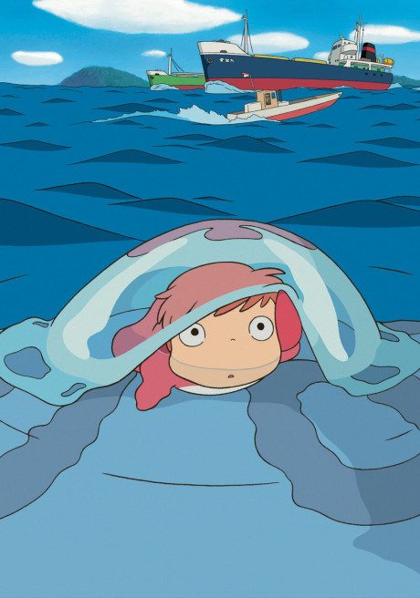

AnimePonyo
崖の上のポニョ
An original anime, so there's no book to continue with.
7.9AniList
—Animeter
1 epMovie
Is it worth watching?
The drop map is for series. Rate the film above to add to its Animeter score.